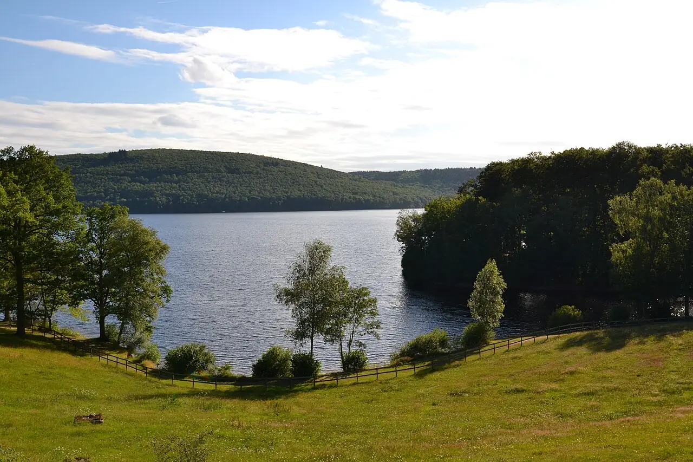

Lac de Vassivière — Auphelle
Haute-Vienne, France · baignade, paddle, kayak, windsurf

Grand lac de barrage du plateau de Millevaches, avec des plages de sable, des criques boisées et une île consacrée à l’art contemporain. Idéal pour la baignade, le paddle et la voile légère.
- Lieu
- Haute-Vienne, France
- Niveau
- Débutant
- Activités
- baignade, paddle, kayak, windsurf
- Type d'eau
- lake
- Coordonnées
- 45.80, 1.85 (position approximative du secteur)
Dangers à connaître
- Eau fraîche, surtout en début d’été.
- Le vent peut se lever sur ce grand plan d’eau.
Le conseil d'Ocean Buddy
Pose-toi sur la plage surveillée d’Auphelle, puis pars en kayak explorer les anses boisées.
Ouvrir dans Ocean Buddy Télécharger sur l'App Store
Source : Fiche Ocean Buddy · septembre 2026 · à vérifier localement.